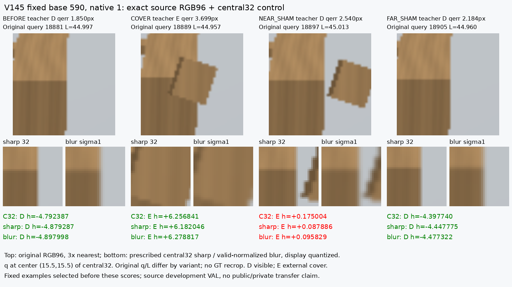
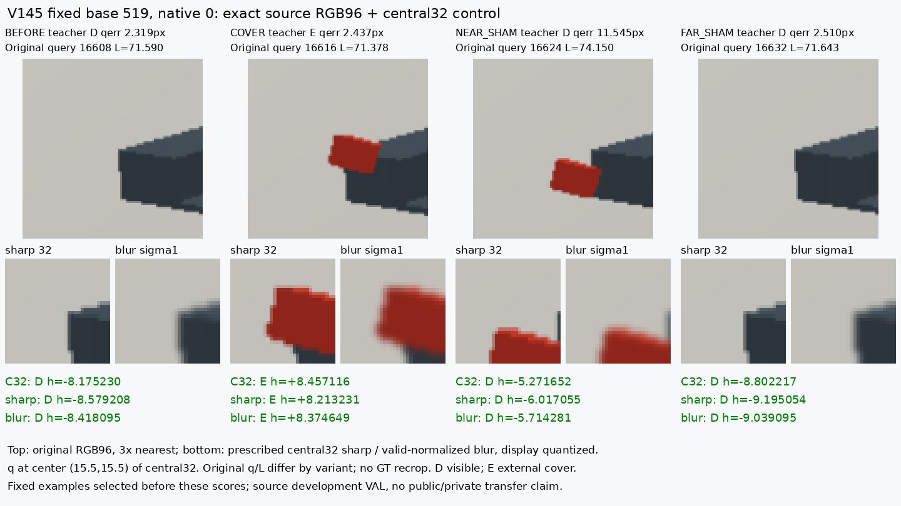

이 고정 대조에서는 선명한 central32 세부정보 추가가 해결책이라는 증거가 나오지 않았다. Sharp는 E와 가림/근접쌍 성공에서 소폭 악화했고, blur는 D 오판을 조금 줄였지만 native35 통과는 기존C32와같은20/35다.
원래 합성26,624행의 초기 query/crop과 native D/E를 사용했다. 동결 C32 저장 logit에 39,441개 파라미터의 작은 공간 CNN 잔차를 추가했다. 두 arm은 초기 가중치·native64+64 샘플·손실·AdamW·2000회 업데이트가 같고, 중앙32 RGB의 고정 blur 여부만 다르다. 현재 평가셋·공개 weak 라벨·encoder·기존 C32 재추론·PnP는 사용하지 않았다.
| 합성 VAL | 모델 | 실제D → [D,E,U] | 실제E → [D,E,U] | D recall | E recall | known D/E 보류율 |
|---|---|---|---|---|---|---|
| old_registered_native | C32 | [806, 19, 3] | [11, 48, 1] | 97.34% | 80.00% | 0.45% |
| continuous_registered_native | C32 | [1717, 53, 2] | [14, 116, 0] | 96.90% | 89.23% | 0.11% |
| old_registered_native | SHARP_NATIVE_CENTRAL32 | [806, 19, 3] | [13, 46, 1] | 97.34% | 76.67% | 0.45% |
| continuous_registered_native | SHARP_NATIVE_CENTRAL32 | [1718, 52, 2] | [15, 115, 0] | 96.95% | 88.46% | 0.11% |
| old_registered_native | BLURRED_NATIVE_CENTRAL32 | [808, 17, 3] | [11, 48, 1] | 97.58% | 80.00% | 0.45% |
| continuous_registered_native | BLURRED_NATIVE_CENTRAL32 | [1722, 48, 2] | [14, 116, 0] | 97.18% | 89.23% | 0.11% |
기존 VAL D828/E60, 신규 VAL D1772/E130. C32→sharp는 기존 E48→46/60, 신규 E116→115/130으로 악화했다. Blur는 E를 유지하고 D를 기존806→808/828, 신규1717→1722/1772로 소폭 늘렸다. 기존 고정 native35 통과는 C32 20, sharp17, blur20으로 해결되지 않았다.
앞 물체가 target 옆에 있어도 보이는 점을 E로 오판한다. 오차2.54px 사례의 logit은 C32 +0.175004 → sharp +0.087886 / blur +0.095829로 내려갔지만 raw0에서 모두 E다. GT 좌표로 crop을 옮기지 않았다.

두 방식 모두 이 사례를 이미 맞힌다. 새로 해결한 성공 사례로 세지 않았다.

| 합성 VAL | 모델 | D → [D,E,U] | E → [D,E,U] |
|---|---|---|---|
| old_registered_native | C32 | [395, 3, 0] | [0, 16, 0] |
| continuous_registered_native | C32 | [947, 3, 0] | [0, 37, 0] |
| old_registered_native | SHARP_NATIVE_CENTRAL32 | [395, 3, 0] | [0, 16, 0] |
| continuous_registered_native | SHARP_NATIVE_CENTRAL32 | [947, 3, 0] | [1, 36, 0] |
| old_registered_native | BLURRED_NATIVE_CENTRAL32 | [395, 3, 0] | [0, 16, 0] |
| continuous_registered_native | BLURRED_NATIVE_CENTRAL32 | [947, 3, 0] | [0, 37, 0] |
선명한 중앙 픽셀을 더 읽으면 해결된다는 설명은 이번 조건에서 지지되지 않았다. 그렇다고 원본 영상에 유용한 정보가 전혀 없거나 목표가 불가능하다는 결론은 아니다. CNN/FiLM 각각의 기여나 다른 학습 예산·전체 crop 조건까지 검증한 실험도 아니다. blur arm을 채택하거나 실사 문턱을 조정하지 않았다. 모든 원래 teacherS/U와 입력U184를 유지했다.
별도 공개 실사 정렬 작업에서 의미상 target/부위가 연결된 weak TRAIN D10/E2를 확보했지만, 이 fit에는 넣지 않았다. VAL_HALL도 E1뿐이라 균형 있는 공개 실사 검증 자료 확장이 남는다.
V144 공개 실사 대상·역할·원crop 검토 · 전체 source 지표·제한·검산 · 독립 수치 검산 PASS · 전체 cover/near 쌍 결과